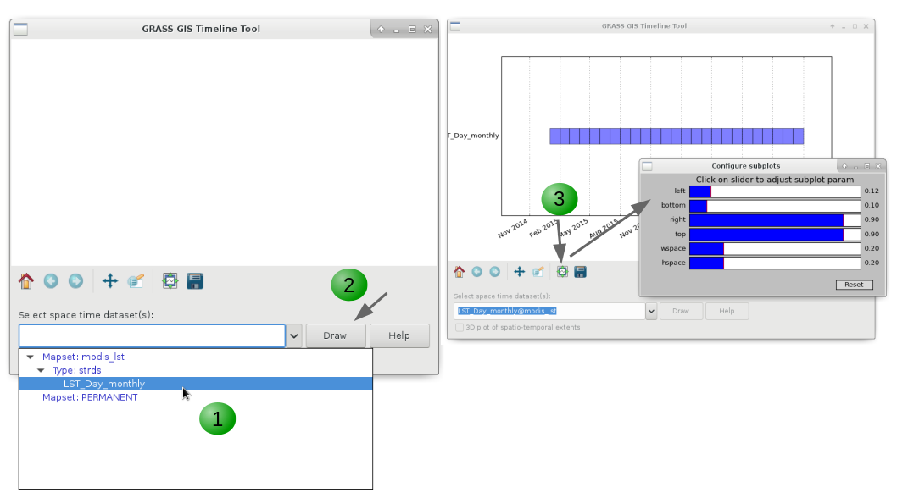

TGRASS: temporal data processing with GRASS GIS
FOSS4G Europe 2017 workshop
Veronica Andreo, Luca Delucchi and Markus Neteler
Course outline:
- Introduction to GRASS GIS
- Introduction to GRASS Temporal Framework
- Hands-on to raster time series processing
Software requirements:
- GRASS GIS 7.2: download | OSGeo-live
- GRASS GIS Add-ons: r.modis.download, r.modis.import and v.strds.stats
- pyModis library
Sample data:
- Main dataset: North Carolina basic location (50 MB)
- extra "mapset"
modis_lst: monthly land surface temperature (LST) from MODIS sensor (MOD11B3.006) for North Carolina (2015-2016)
- extra "mapset"
GRASS GIS introduction
Working with GRASS GIS is not much different from any other GIS. Just a few commonly used terms need to be introduced first.GRASS DATABASE, LOCATION and MAPSET
The GRASS DATABASE (also called "GISDBASE") is an existing directory which contains all GRASS GIS projects. These projects are organized in subdirectories called LOCATIONs.A LOCATION is defined by its coordinate system, map projection and geographical boundaries.
In a MAPSET you can organize GIS maps thematically or geographically or by project or whatever.

GRASS DATABASE, LOCATIONs and MAPSETs
Raster and vector maps
GRASS GIS is able to read most GIS data formats directly (mainly done through the GDAL library). GRASS GIS has its own internal formats to manage raster and vector data, so own data have to be imported or linked into a GRASS LOCATION/MAPSET.The vector format is topological, this means that adjacent geographic components in a single vector map are related to each other. For example, in a non-topological GIS if two areas shared a common border that border would be digitized twice and also stored in a duplicate manner. In a topological GIS such as GRASS GIS this border exists only once and is shared between these two areas. The topological representation of vector data helps to produce and maintain vector maps with clean geometry as well as it enables certain analyses that can not be conducted with non-topological or spaghetti data.

All vector data types in GRASS GIS
Modules
GRASS GIS is composed of 450 and more modules to run any kind of GIS analysis. It is possible to analize raster, raster 3D, imagery and vector maps along with their alphanumerical attributes.It is possible to install further modules, called Addons, from a centralized repository at OSGeo or from github using the command g.extension. The wealth of modules is organized by their first name in order to easily find the desired functionality. The graphical user interface offers a tree view as well as a search engine.
| Prefix | Function class | Type of command | Example |
|---|---|---|---|
| g.* | general | general data management | g.rename: renames map |
| d.* | display | graphical output | d.rast: display raster map, d.vect: display vector map |
| r.* | raster | raster processing | r.mapcalc: map algebra, r.univar: univariate statistics |
| v.* | vector | vector processing | v.clean: topological cleaning |
| i.* | imagery | imagery processing | i.pca: Principal Components Analysis on imagery group |
| r3.* | voxel | 3D raster processing | r3.stats: voxel statistics |
| db.* | database | database management | db.select: select value(s) from table |
| ps.* | postscript | map creation in PostScript format | ps.map: PostScript map creation |
| t.* | temporal | space-time datasets | t.rast.aggregate: raster time series aggregation |
Region and Mask
The computational (or current) region is the actual setting of the region boundaries and the actual raster resolution.The raster input maps are automatically cropped/padded and rescaled to match the current region, the output maps have their bounds and resolution equal to those of the current computational region, while vector maps are always considered completely.

The red box shows the computational region currently set
MASK (this raster map name is reserved for this purpose).
By setting the MASK (here based on a ZIP code) only the raster data inside the masked area are used for further analysis
Interfaces
GRASS GIS offers different interfaces for the interaction between user and software, let's see them...Graphical User Interface
The GUI is the simpler way to approach GRASS GIS. The GRASS GIS GUI is composed by two elements, theLayer Manager where you can find all the GRASS GIS modules and you can manage your data and, the Map Display where you can navigate, print and query your maps. It also comes with a Python shell for rapid prototyping.

GRASS GIS Graphical User Interface (GUI)
GRASS GIS plugin or through Processing.
Command line
The command line is the traditional and, probably, the more powerful way to use GRASS GIS, used daily by many GRASS GIS power users worldwide.Python
Python is a powerful and simple programming language, and you can use it to:- interface with the functionality offered by GRASS GIS
- create your own workflows chaining several GRASS GIS modules
- create new addons by using GRASS GIS modules along with a wide number of Python libraries.
!/usr/bin/env python
# simple example for pyGRASS usage: raster processing via modules approach
from grass.pygrass.modules.shortcuts import general as g
from grass.pygrass.modules.shortcuts import raster as r
g.message("Filter elevation map by a threshold...")
# set computational region
input = 'elevation'
g.region(rast=input)
# hardcoded:
# r.mapcalc('elev_100m = if(elevation > 100, elevation, null())', overwrite = True)
# with variables
output = 'elev_100m'
thresh = 100.0
r.mapcalc("%s = if(%s > %d, %s, null())" % (output, input, thresh, input), overwrite = True)
r.colors(map=output, color="elevation")
WPS - OGC Web Processing Service
It is possible to run GRASS GIS modules through the web using the Web Processing Service (WPS is an OGC standard). The Free and Open Source software ZOO-Project and PyWPS allow the user to run GRASS GIS commands in a simple way.Temporal GRASS GIS introduction
GRASS GIS is the first temporal Open Source GIS with capabilities to manage, analyze, process and visualize spatio-temporal data, as well as, the temporal relationships among time series. Importantly, the TGRASS concept is based on metadata and does not duplicate any datasets. It uses an SQL database to store the temporal and spatial extension of space-time datasets (STDS), i.e. map metadata, as well as the topological relationships among maps and among STDS.
Terminology overview
Temporal database
A temporal database is a mapset-specific database in which all time stamped maps are registered, i.e.: their spatial and temporal extents, unique ID and map type metadata are stored. This allows users to perform complex SQL queries using the spatio-temporal extent and metadata information for map selection.Space-time datasets
- Space time raster datasets (STRDS) collections of time stamped raster maps.
- Space time 3D raster datasets (STR3DS) collections of time stamped 3D raster maps.
- Space time vector datasets (STVDS) collections of time stamped vector maps.
Spatio-temporal modules
- t.*: General modules to handle STDS of all types
- t.rast.*: Modules that process specifically STRDS
- t.rast3d.*: Modules that process specifically STR3DS
- t.vect.*: Modules that process specifically STVDS
Absolute time vs relative time
Two time definitions are used:
| Absolute time | Relative time |
|---|---|
| Gregorian calendar (ISO 8601 time format notation) | An integer and a time unit (year, month, day, hour, minute, seconds) |
| Example: 2013-10-15 13:00:00 | Example: 4 years, 90 days, 1 second |
Time intervals vs time instances
GRASS GIS supports both, time intervals and time instances:
| Time intervals | Time instances |
|---|---|
| Defined by start time and end time: [start, end) | Defined by start time |
| Support for gaps, allow overlapping, might contain time instances, might be irregularly spaced in time | Punctual event |
Granularity
The granularity is the largest common divider granule of time intervals and gaps between intervals or instances from all time stamped spatial fields that are collected in a STDS. It is represented as a number of seconds, minutes, hours, days, weeks, months or years.
Workflow overview
- Set and connect the temporal database (mapset specific): t.connect
- Create the STDS (raster, vector or raster 3D): t.create
- Assign timestamps to maps and register them in the STDS: t.register
- Check info, integrity and validity of STDS: t.list, t.info, t.topology
- Edition, updating, unregistering, removal of maps and/or STDS: t.rename, t.remove, t.support, t.unregister
- Listing maps, selections, univariate statistics: t.rast.list, t.vect.list, t.select, t.rast.extract, t.vect.extract, t.rast.univar, t.vect.univar
- Spatio-temporal processing (a bit raster biased):
- data aggregation: t.rast.series, t.rast.aggregate, t.rast.aggregate.ds
- data accumulation: t.rast.accumulate, t.rast.accumulate,
- gap-filling and smoothing: t.rast.gapfill, t.rast.neighbors
- spatio-temporal algebra: t.rast.mapcalc, t.rast.algebra, t.vect.algebra
- Visualization: g.gui.timeline, g.gui.tplot, g.gui.animation, g.gui.mapswipe
Hands-on to raster time series processing
Getting the MODIS satellite sensor data
MODIS is a payload scientific instrument on board the NASA Terra and the Aqua satellites with 36 spectral bands. Data are available for download upon user registration.
Create the SETTING file with the following content, e.g. in the directory $HOME/gisdata/:
your_NASA_user
your_NASA_password
The r.modis.download directly downloads from the MODIS data server:
r.modis.download -g settings=$HOME/gisdata/SETTING product=lst_terra_monthly_5600 tiles=h11v05 startday="2015-01-01" endday="2016-12-31" folder=$HOME/lst_monthly
r.modis.import -w files=$HOME/lst_monthly/listfileMOD11B3.006.txt spectral="( 1 1 0 0 1 1 )" outfile=$HOME/lst_monthly/monthly_lst_to_register.txt
g.list type=raster pattern="MOD11B3*"
# Download data: MOD11B3 2015-2016, tile h11v05
r.modis.download -g settings=$HOME/gisdata/SETTING \
product=lst_terra_monthly_5600 \
tiles=h11v05 startday="2015-01-01" endday="2016-12-31" \
folder=$HOME/lst_monthly
# Reproject from Sinusoidal to current NC projection and import maps into NC Location (Day and Night overpasses)
r.modis.import -w files=$HOME/lst_monthly/listfileMOD11B3.006.txt \
spectral="( 1 1 0 0 1 1 )" \
outfile=$HOME/lst_monthly/monthly_lst_to_register.txt
# Check list of imported maps
g.list type=raster pattern="MOD11B3*"
# Import the needed libraries
import grass.pygrass.modules as gmod
import os
from subprocess import PIPE
# Set variables
# home
HOME=os.path.expanduser('~')
# stdout
# Download data: MOD11B3 2015-2016, tile h11v05
gmod.Module("r.modis.download", flags="g", settings=os.path.join(HOME, 'gisdata', 'SETTING'),
product="lst_terra_monthly_5600", tiles="h11v05", startday="2015-01-01",
endday="2016-12-31", folder=os.path.join(HOME, lst_monthly)
# Reproject and import maps into NC Location (Day and Night)
gmod.Module("r.modis.import", flags="w" files=os.path.join(HOME, 'lst_monthly', 'listfileMOD11B3.006.txt'),
spectral="( 1 1 0 0 1 1 )", outfile=os.path.join(HOME, 'lst_monthly', 'monthly_lst_to_register.txt'))
# Check list of imported maps
glist = gmod.Module("g.list", type="raster", pattern="MOD11B3*", stdout_=PIPE, stderr_=PIPE)
print(glist.outputs["stdout"].value)
We will now visualize one of the MODIS LST images and add different map decorations. We first change the color palette from grey to viridis and set the computational region to the state of North Carolina (using nc_state vector map).
r.colors MOD11B3.A2015060.h11v05.single_LST_Day_6km color=viridis
g.region -p vector=nc_state
g.region -p raster=MOD11B3.A2015060.h11v05.single_LST_Day_6km
# Change color palette from grey to viridis
r.colors MOD11B3.A2015060.h11v05.single_LST_Day_6km color=viridis
# Set region to NC (g.region -d)
g.region -p vector=nc_state
# Optionally, to the full extent of one of the raster maps
g.region -p raster=MOD11B3.A2015060.h11v05.single_LST_Day_6km
# Change color palette from grey to viridis
gmod.Module("r.colors", map="MOD11B3.A2015060.h11v05.single_LST_Day_6km", color="viridis")
# Set region to NC
gmod.Module("g.region", flags="p", vector="nc_state")
# Optionally, to the full extent of one of the raster maps
gmod.Module("g.region", flags="p", raster="MOD11B3.A2015060.h11v05.single_LST_Day_6km")
We can open a monitor and run the commands from the command line or do everything in the main GUI and copy the commands for future reference or replication.
# open a monitor
d.mon wx0
# display raster map
d.rast map=MOD11B3.A2015060.h11v05.single_LST_Day_6km
# display vector map
d.vect map=nc_state type=boundary
# add raster legend
d.legend -t -s -d -b raster=MOD11B3.A2015060.h11v05.single_LST_Day_6km \
title=LST title_fontsize=20 font=sans fontsize=18
# add scale bar
d.barscale length=200 units=kilometers segment=4 fontsize=14
# add North arrow
d.northarrow style=1b text_color=black
# add text
d.text -b text="LST Day from MOD11B3.006 - North Carolina - March, 2015" \
color=black bgcolor=229:229:229 align=cc font=sans size=8

MODIS LST map with decorations
Create temporal raster dataset (STRDS)
To create a space-time raster data set (STRDS) implies to create an SQLite table in the temporal database, i.e.: a container table, that will hold our raster time series and will allow us to easily handle huge amounts of maps by only using the STRDS as input in temporal commands.
If this is the first time you use the temporal framework, you need to create and set the connection to the temporal database by means of t.connect. As the temporal database is mapset specific, you'll need to repeat this step in each mapset in which you'll have STDSs.
Once the connection is set, you can create the empty STRDS, i.e.: the empty table, in which you'll put (aka: register) all your time series maps afterwards. For the creation of any STDS, we need to specify which type of maps (raster, raster3d or vector) the STDS will contain and which type of time (absolute or relative) the maps represent.
t.connect -d
t.create type=strds temporaltype=absolute output=LST_Day_monthly title="Monthly LST Day 5.6 km" description="Monthly LST Day 5.6 km MOD11B3.006, 2015-2016"
t.list type=strds
t.info input=LST_Day_monthly
# Create the temporal db connection
t.connect -d
# Create the STRDS
t.create type=strds temporaltype=absolute output=LST_Day_monthly \
title="Monthly LST Day 5.6 km" \
description="Monthly LST Day 5.6 km MOD11B3.006, 2015-2016"
# Check if the STRDS is created
t.list type=strds
# Get info about the STRDS
t.info input=LST_Day_monthly
import grass.temporal as tgis
# Create the temporal db connection using temporal library
gmod.Module("t.connect", flags="d")
# Initialize the temporal library
tgis.init()
# Create the new STRDS
tgis.open_new_stds("LST_Day_monthly", "strds", "absolute", "Monthly LST Day 5.6 km",
"Monthly LST Day 5.6 km MOD11B3.006, 2015-2016", "mean", None, False)
# Connect to the SQL database interface
dbif = tgis.SQLDatabaseInterfaceConnection()
dbif.connect()
# Get and print the list of temporal dataset
stds_list = tgis.get_dataset_list("strds", "absolute", dbif=dbif)
print(stds_list)
# Get and print info about the created strds
dataset = tgis.dataset_factory("strds", "LST_Day_monthly@modis_lst")
dataset.select(dbif)
dataset.print_info()
Once the STRDS is created, we add the maps into it, i.e.: we register maps in the STRDS. To register maps in a STDS, we need to pass the empty STDS as input and the list of maps to be registered. There are different ways to register maps in STDS, for more options, you can check the t.register manual page and the related wiki page.
Let's check now the basic info again to see how it looks like and list the raster maps in our LST_Day_monthly STRDS:
t.register input=LST_Day_monthly file=$HOME/lst_monthly/monthly_lst_to_tregister.txt
t.info LST_Day_monthly
t.rast.list LST_Day_monthly
# Register maps in STRDS
t.register input=LST_Day_monthly \
file=$HOME/lst_monthly/monthly_lst_to_tregister.txt
# Check info
t.info LST_Day_monthly
# Check the list of maps in the STRDS
t.rast.list LST_Day_monthly
# Register maps using the Python function
tgis.register_maps_in_space_time_dataset(type="strds", name="LST_Day_monthly@modis_lst",
file="$HOME/lst_monthly/monthly_lst_to_tregister.txt")
# Get info using the modules
gmod.Module("t.info", input="LST_Day_monthly")
# Get list of raster using the Python library
tgis.list_maps_of_stds("strds", "LST_Day_monthly@modis_lst", "name,mapset,start_time,end_time",
"start_time", "", "|", "cols", True, "no")
Alternatively, we could have registered our raster maps using the maps, start and increment options along with the i flag for interval creation. The command in that case would look as follows:
t.register -i input=LST_Day_monthly \
maps=`g.list type=raster pattern=MOD11B3*LST_Day* separator=comma` \
start="2015-01-01" increment="1 months"
Let's see our STRDS graphically. We will use the g.gui.timeline tool. The tool g.gui.timeline is under the Temporal menu, in GUI Tools section. It can be called from the terminal with: g.gui.timeline --ui. To plot a STDS, it is necessary to select it first from the dropdown list and then click Draw. Alternatively, you can also get a 3D representation of the STDS (i.e.: x, y and time) by checking the 3D box. To change the padding settings of the plot you can click over the icon indicated bellow in the GUI tab.
g.gui.timeline inputs=LST_Day_monthly

Workflow for plotting STRDS with g.gui.timeline
Timeline plot for LST_Day_monthly time series
Temporal data analysis
One basic but very important function when handling hundreds or thousands of maps is the listing function, i.e.: we usually need to list maps that meet a certain condition. For example, we need maps which start month is June, maps with minimum values lower than 100, and so on. The GRASS GIS Temporal framework has different commands for that task: t.list for listing STDS and maps registered in the temporal database, t.rast.list for raster time series and, t.rast.list for vector time series. All these commands allow us to list STDSs and/or maps according to different criteria. Let's see some examples with our LST_Day_monthly STRDS:
# Maps with minimum value lower than or equal to 14000
t.rast.list input=LST_Day_monthly order=min \
columns=name,start_time,min where="min <= '14000'"
name|start_time|min
MOD11B3.A2015032.h11v05.single_LST_Day_6km|2015-02-01 00:00:00|12950.0
MOD11B3.A2016032.h11v05.single_LST_Day_6km|2016-02-01 00:00:00|12964.0
MOD11B3.A2015001.h11v05.single_LST_Day_6km|2015-01-01 00:00:00|13022.0
# Maps with maximum value higher than 14000
t.rast.list input=LST_Day_monthly order=max \
columns=name,start_time,max where="max > '14000'"
name|start_time|max
MOD11B3.A2016001.h11v05.single_LST_Day_6km|2016-01-01 00:00:00|14360.0
MOD11B3.A2015001.h11v05.single_LST_Day_6km|2015-01-01 00:00:00|14396.0
MOD11B3.A2015032.h11v05.single_LST_Day_6km|2015-02-01 00:00:00|14522.0
# Maps between two given dates
t.rast.list input=LST_Day_monthly columns=name,start_time \
where="start_time >= '2015-05' and start_time <= '2015-08-01 00:00:00'"
name|start_time
MOD11B3.A2015121.h11v05.single_LST_Day_6km|2015-05-01 00:00:00
MOD11B3.A2015152.h11v05.single_LST_Day_6km|2015-06-01 00:00:00
MOD11B3.A2015182.h11v05.single_LST_Day_6km|2015-07-01 00:00:00
MOD11B3.A2015213.h11v05.single_LST_Day_6km|2015-08-01 00:00:00
# Maps from January
t.rast.list input=LST_Day_monthly columns=name,start_time \
where="strftime('%m', start_time)='01'"
name|start_time
MOD11B3.A2015001.h11v05.single_LST_Day_6km|2015-01-01 00:00:00
MOD11B3.A2016001.h11v05.single_LST_Day_6km|2016-01-01 00:00:00
# Maps from June, 1st
t.rast.list input=LST_Day_monthly columns=name,start_time \
where="strftime('%m-%d', start_time)='06-01'"
name|start_time
MOD11B3.A2015152.h11v05.single_LST_Day_6km|2015-06-01 00:00:00
MOD11B3.A2016153.h11v05.single_LST_Day_6km|2016-06-01 00:00:00
To explore a bit more our time series, we will obtain univariate statistics for the maps in the STRDS. There's a dedicated module for that: t.rast.univar. There's also the possibility to obtain extended statistics such as first quartile, median value, third quartile and percentile 90 by setting the e flag. Let's see:
t.rast.univar input=LST_Day_monthly
id|start|end|mean|min|max|mean_of_abs|stddev|variance|coeff_var|sum|null_cells|cells
MOD11B3.A2015001.h11v05.single_LST_Day_6km@modis_lst|2015-01-01 00:00:00|2015-02-01 00:00:00|13920.4954589617|13022|14396|13920.4954589617|204.922713367766|41993.3184540075|1.47209353267553|329539889|51297|74970
MOD11B3.A2015032.h11v05.single_LST_Day_6km@modis_lst|2015-02-01 00:00:00|2015-03-01 00:00:00|13850.5832593907|12950|14522|13850.5832593907|269.511406162359|72636.3980516119|1.94584878567933|327801754|51303|74970
MOD11B3.A2015060.h11v05.single_LST_Day_6km@modis_lst|2015-03-01 00:00:00|2015-04-01 00:00:00|14387.8026526992|13771|14913|14387.8026526992|202.223782537869|40894.4582239235|1.40552235403321|340616840|51296|74970
MOD11B3.A2015091.h11v05.single_LST_Day_6km@modis_lst|2015-04-01 00:00:00|2015-05-01 00:00:00|14724.7657768016|14160|15212|14724.7657768016|127.152673621415|16167.8024090742|0.863529346060911|348594105|51296|74970
t.rast.univar -e input=LST_Day_monthly
id|start|end|mean|min|max|mean_of_abs|stddev|variance|coeff_var|sum|null_cells|cells|first_quartile|median|third_quartile|percentile_90
MOD11B3.A2015001.h11v05.single_LST_Day_6km@modis_lst|2015-01-01 00:00:00|2015-02-01 00:00:00|14063.8152535675|13625|14289|14063.8152535675|104.326695294161|10884.0593510007|0.741809341300163|12313517190|135054|1010600|14001|14076|14148|14183
MOD11B3.A2015032.h11v05.single_LST_Day_6km@modis_lst|2015-02-01 00:00:00|2015-03-01 00:00:00|14040.1111911881|13532|14349|14040.1111911881|128.052778812874|16397.5141616988|0.912049606083195|12292763193|135054|1010600|13944|14059|14140|14190
MOD11B3.A2015060.h11v05.single_LST_Day_6km@modis_lst|2015-03-01 00:00:00|2015-04-01 00:00:00|14509.6026765013|14012|14884|14509.6026765013|128.58386990137|16533.8115988123|0.886198421612294|12703824585|135054|1010600|14417|14523|14599|14664
MOD11B3.A2015091.h11v05.single_LST_Day_6km@modis_lst|2015-04-01 00:00:00|2015-05-01 00:00:00|14781.4240850852|14160|15128|14781.4240850852|116.594077815457|13594.1789816369|0.788787853892261|12941816732|135054|1010600|14724|14802|14859|14907
t.rast.univar input=LST_Day_monthly separator=comma output=stats_LST_Day_monthly.csv
# Print univariate stats for maps within STRDS
t.rast.univar input=LST_Day_monthly
# Get extended statistics and write the output to a csv file
t.rast.univar -e input=LST_Day_monthly separator=comma output=stats_LST_Day_monthly.csv
# Print univarite statistics with the Python library
tgis.print_gridded_dataset_univar_statistics("strds", "LST_Day_monthly@modis_lst", None, None, False, False, ",", False)
However, those statistics are a bit difficult to directly interpret since values are in °K*50. Let's re-scale the data to °C and run the previous command again. Then, we will set a proper color palette for the STRDS and display one map.
To transform all the maps in our LST_Day_monthly time series into °C we will use the t.rast.algebra module. This module allows to perform a very wide variety of operations in the temporal and spatial domains, as well as much of the more "classic" operations already available in r.mapcalc.
t.rast.algebra basename=LST_Day_monthly_celsius expression="LST_Day_monthly_celsius = LST_Day_monthly*0.02 - 273.15"
t.rast.univar input=LST_Day_monthly_celsius
t.rast.colors input=LST_Day_monthly_celsius color=celsius
# Re-scale data into degrees Celsius
t.rast.algebra basename=LST_Day_monthly_celsius \
expression="LST_Day_monthly_celsius = (LST_Day_monthly*0.02) - 273.15"
# Print univariate stats
t.rast.univar input=LST_Day_monthly_celsius
# Set a dedicated color pallete
t.rast.colors input=LST_Day_monthly_celsius color=celsius
# Re-scale data into degrees Celsius
gmod.Module("t.rast.algebra", basename="LST_Day_monthly_celsius",
expression="LST_Day_monthly_celsius = (LST_Day_monthly*0.02) - 273.15")
# Print univarite statistics with the Python library
tgis.print_gridded_dataset_univar_statistics("strds", "LST_Day_monthly@modis_lst", None, None, False, False, ",", False)
gmod.Module("t.rast.colors", input="LST_Day_monthly_celsius", color="celsius")

MODIS LST re-scaled to degrees Celsius
Alternatively, we could have used t.rast.mapcalc to perform the previous transformation:
t.rast.mapcalc input=LST_Day_monthly output=LST_Day_monthly_celsius basename=LST_Day_monthly_celsius expression="LST_Day_monthly*0.02 - 273.15"
Temporal aggregations
There are basically two dedicated modules to perform temporal aggregations in GRASS GIS. The first that we will use is t.rast.series. This module is a wrapper for r.series and allows us to aggregate our STRDS or parts of it with different methods. We will use it now to obtain the absolute maximum LST in the past two years.
t.rast.series input=LST_Day_monthly_celsius output=LST_Day_max method=maximum
r.colors map=LST_Day_max color=celsius
d.mon wx0
d.rast LST_Day_max
d.legend LST_Day_max
# Get maximum LST in the STRDS
t.rast.series input=LST_Day_monthly_celsius \
output=LST_Day_max method=maximum
# Change color pallete to celsius
r.colors map=LST_Day_max color=celsius
# Display the new map
d.mon wx0
d.rast LST_Day_max
d.legend LST_Day_max
# Get maximum LST in the STRDS
gmod.Module("t.rast.series", input="LST_Day_monthly_celsius",
output="LST_Day_max" method="maximum")
Now, by means of the spatio-temporal algebra, we will get the month in which the absolute maximum LST occurred. For that, we will first compare our LST_Day_monthly_celsius STRDS with the map of absolute maximum LST LST_Day_max. If they coincide, we keep the month for that pixel, otherwise it will be NULL. Then, we aggregate the resulting month_max_lst STRDS with t.rast.series method=maximum and we get the map with the pixelwise month in which the absolute maximum LST have occurred in the past two years. Finally, we remove the intermediate STRDS, since we are only interested in the aggregated map
t.rast.mapcalc -n inputs=LST_Day_monthly_celsius output=month_max_lst expression="if(LST_Day_monthly_celsius == LST_Day_max, start_month(), null())" basename=month_max_lst
t.rast.series input=month_max_lst method=maximum output=max_lst_date
t.remove -rf inputs=month_max_lst
# New strds with month of overall maximum
t.rast.mapcalc -n inputs=LST_Day_monthly_celsius output=month_max_lst \
expression="if(LST_Day_monthly_celsius == LST_Day_max, start_month(), null())" \
basename=month_max_lst
# Get basic info
t.info month_max_lst
# Map with month of overall maximum
t.rast.series input=month_max_lst method=maximum output=max_lst_date
# Remove month_max_lst strds (we were only interested in the resulting aggregated map)
t.remove -rf inputs=month_max_lst
# New strds with month of overall maximum
gmod.Module("t.rast.mapcalc", flags="n", inputs="LST_Day_monthly_celsius", output="month_max_lst",
expression="if(LST_Day_monthly_celsius == LST_Day_max_2015_2016, start_month(), null())",
basename="month_max_lst")
# Map with month of overall maximum
gmod.Module("t.rast.series", input="month_max_lst", method="maximum", output="max_lst_date")
# Remove month_max_lst strds
gmod.Module("t.remove", flags="rf", inputs="month_max_lst")
Note that the flags "-rf" force (immediate) removal of both the STRDS (i.e.: the container table) and the maps registered in it.
Finally, we display the resulting map:
d.mon wx0
d.rast max_lst_date
d.legend max_lst_date
The other module that allows us to perform temporal aggregations is t.rast.aggregate. With this module we are able to aggregate raster maps in our STRDS with different granularities. Note that this module also has the option where that allow us to set specific dates for the aggregation. We will use this module to get 3-month and 6-month average LST.
t.rast.aggregate input=LST_Day_monthly_celsius output=LST_Day_mean_3month basename=LST_Day_mean_3month suffix=gran method=average granularity="3 months"
t.info LST_Day_mean_3month
t.rast.list LST_Day_mean_3month
t.rast.aggregate input=LST_Day_monthly_celsius output=LST_Day_mean_6month basename=LST_Day_mean_6month suffix=gran method=average granularity="6 months"
t.info LST_Day_mean_6month
t.rast.list LST_Day_mean_6month
# 3-month mean LST
t.rast.aggregate input=LST_Day_monthly_celsius \
output=LST_Day_mean_3month \
basename=LST_Day_mean_3month suffix=gran \
method=average granularity="3 months"
# Print info
t.info LST_Day_mean_3month
# Print list of maps
t.rast.list LST_Day_mean_3month
# 6-month mean LST
t.rast.aggregate input=LST_Day_monthly_celsius \
output=LST_Day_mean_6month \
basename=LST_Day_mean_6month suffix=gran \
method=average granularity="6 months"
# Print info
t.info LST_Day_mean_6month
# Print list of maps
t.rast.list LST_Day_mean_6month
# 3-month mean LST
gmod.Module("t.rast.aggregate", input="LST_Day_monthly_celsius", output="LST_Day_mean_3month",
basename="LST_Day_mean_3month", suffix="gran", method="average", granularity="3 months")
# 6-month mean LST
gmod.Module("t.rast.aggregate", input="LST_Day_monthly_celsius", output="LST_Day_mean_6month",
basename="LST_Day_mean_6month", suffix="gran", method="average", granularity="6 months")
Now, we will extract the 3-month mean LST for points in a vector map. We will use the vector map comm_colleges that is already available in the PERMANENT mapset of NC Location. There are different commands that allow us to perform this task, but we'll use v.what.strds. This module allows to extract values for more than one STRDS and (optionally) to write the output to the attribute table of the input vector map.
v.what.strds input=comm_colleges strds=LST_Day_mean_3month,LST_Day_mean_6month output=comm_colleges_lst
v.db.select map=comm_colleges_lst file=ts_points.csv
# Extract data from raster maps in the STRDSs and write to a new vector map
v.what.strds input=comm_colleges strds=LST_Day_mean_3month,LST_Day_mean_6month \
output=comm_colleges_lst
# Save the attribute table of the new vector into a csv file
v.db.select map=comm_colleges_lst file=ts_points.csv
# Alternatively, update attr table of the input vector map
v.what.strds -u input=comm_colleges strds=LST_Day_mean_3month,LST_Day_mean_6month
v.db.select map=comm_colleges
# Extract data from raster maps in the STRDSs and write to a new vector map
gmod.Module("v.what.strds", input="comm_colleges", output="comm_colleges_lst",
strds="LST_Day_mean_3month,LST_Day_mean_6month")
# Save the attribute table of the new vector into a csv file
gmod.Module("v.db.select", map="comm_colleges_lst", file="ts_points.csv")
Alternatively, we could use t.rast.what that samples a STRDS at specific vector point coordinates and write the output to stdout using different layouts. For example:
t.rast.what points=comm_colleges strds=LST_Day_mean_6month output=trastwhat_output.csv null_value=NA separator=comma
t.rast.what points=comm_colleges strds=LST_Day_mean_6month output=trastwhat_output.csv \
null_value=NA separator=comma
gmod.Module("t.rast.what", points="comm_colleges", strds="LST_Day_mean_6month",
output="trastwhat_output.csv", null_value="NA", separator="comma")
You might explore the options available in the parameter layout to see the different ways to write the output.
Even though the most common is to extract raster data to points, we may also be interested in getting spatially aggregated time series data for polygons. GRASS GIS has an add-on for this: v.strds.stats. It calculates zonal statistics of each raster in a STRDS and writes the output to the attribute table of a new polygon vector map. We first need to install the add-on through g.extension. Then, we will extract the average, minimum and maximum monthly LST for municipalities in NC during 2015 and 2016. Note: if it takes too long, change boundary_municp by boundary_wake.
g.extension v.strds.stats
v.strds.stats input=boundary_municp strds=LST_Day_monthly_celsius output=munic_aggr_lst method=average,minimum,maximum
v.db.select map=munic_aggr_lst file=ts_polygons.csv
# Install v.strds.stats add-on
g.extension v.strds.stats
# Extract mean, max and min LST for municipalities
v.strds.stats input=boundary_municp strds=LST_Day_monthly_celsius \
output=munic_aggr_lst method=average,minimum,maximum
# Save the attribute table of the new vector into a csv file
v.db.select map=munic_aggr_lst file=ts_polygons.csv
# Install v.strds.stats add-on
gmod.Module("g.extension", extension="v.strds.stats")
# Extract mean, max and min LST for municipalities
gmod.Module("v.strds.stats", input="boundary_municp", output="munic_aggr_lst",
strds="LST_Day_monthly_celsius", method="average,minimum,maximum")
# Save the attribute table of the new vector into a csv file
gmod.Module("v.db.select", map="munic_aggr_lst", file="ts_polygons.csv")
Temporal data visualization
g.gui.mapswipe
g.gui.animation
g.gui.tplot
Other (very) useful links
- https://ncsu-osgeorel.github.io/grass-intro-workshop/
- https://grasswiki.osgeo.org/wiki/Unleash_the_power_of_GRASS_GIS_at_US-IALE_2017
- https://grasswiki.osgeo.org/wiki/Temporal_data_processing
- http://ncsu-geoforall-lab.github.io/grass-temporal-workshop/
- https://grasswiki.osgeo.org/wiki/Temporal_data_processing/GRASS_R_raster_time_series_processing
References
- Gebbert, S., Pebesma, E. (2014). A temporal GIS for field based environmental modeling. Environmental Modelling & Software, 53, 1–12. DOI
- Gebbert, S., Pebesma, E. (2017). The GRASS GIS temporal framework. International Journal of Geographical Information Science 31, 1273-1292. DOI
- Neteler, M., Bowman, M.H., Landa, M. and Metz, M. (2012): GRASS GIS: a multi-purpose Open Source GIS. Environmental Modelling & Software, 31: 124-130 DOI
- Neteler, M., Mitasova, H. (2008): Open Source GIS: A GRASS GIS Approach. Third edition. ed. Springer, New York. Book site